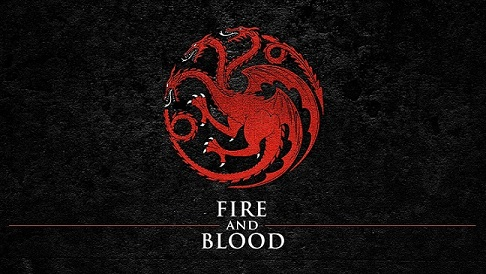
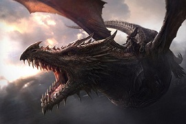
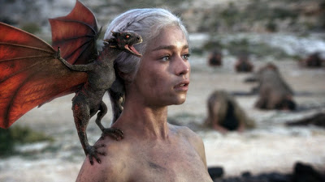

Os Targaryen
{kind=link}
A Casa Targaryen é uma família nobre de Valíria que escapou da ruína de seu continente. Eles viveram por séculos na ilha de Pedra do Dragão até que Aegon, o Conquistador e suas irmãs partiram com seus dragões para conquistar os Sete Reinos. Os Targaryen governaram como reis de Westeros por quase trezentos anos, até serem expulsos durante a Rebelião de Robert. Além da capital, Porto Real, eles possuíam o castelo na ilha de Pedra do Dragão
História
O brasão dos Targaryen é um dragão com três cabeças expelindo chamas, vermelho sobre um fundo negro. O dragão de três cabeças representa Aegon, o Conquistador, e suas duas irmãs, Rhaenys Targaryen e Visenya Targaryen. Seu lema é Fogo e Sangue. Embora os reis Targaryen tenham tomado como sede a cidade de Porto Real, lugar onde ocorreu o Desembarque de Aegon, a sede dos herdeiros Targaryen continuou sendo Pedra do Dragão, sua fortaleza ancestral. A Casa Targaryen era adepta dos deuses valirianos. Durante a Guerra da Conquista, eles abandonaram sua antiga religião e se converteram à Fé dos Sete, religião predominante em Westeros. No entanto, eles continuaram a seguir a prática valiriana do casamento incestuoso entre membros da família, o que garantiria a pureza de sua linhagem e um menor número de pretendentes ao Trono de Ferro. A expressão "sangue do dragão" se refere às típicas características valirianas dos Targaryen: cabelos loiro-platinados e olhos violeta. Alguns Targaryen também possuem uma alta tolerância ao calor, embora não sejam imunes ao fogo. Outro traço típico dos Targaryen, que também foi herdado pelos Blackfyre, é a capacidade de ter premonições em seus sonhos. Aenar Targaryen era um nobre de Valíria de antes da Perdição cuja filha donzela, Daenys, a Sonhadora, teve suas visões escritas e publicadas num livro. Uma possível consequência de suas práticas incestuosas é a propensão dos Targaryen à loucura. O Rei Jaehaerys II Targaryen uma vez disse que cada vez que um novo Targaryen nascia os deuses jogavam uma moeda para decidir se este seria louco ou poderoso. A Casa Targaryen também adota como costume cremar seus mortos ao invés de enterrá-los.A Casa Targaryen era uma das Quarenta Famílias, os chamados Senhores de dragões, da Cidade Franca de Valíria, um grande império que dominou a maior parte do continente oriental. Porém, os Targaryen não eram uma das famílias mais poderosas, sendo que a supremacia do império era disputada entre dois outros clãs mais importantes. Antes da Perdição de Valíria, Daenys, a Sonhadora, previu o cataclisma que se seguiria. Seu pai, Aenar, deu ouvidos à filha e se mudou com a família para o posto mais ocidental da Cidade Franca, a ilha-fortaleza de Pedra do Dragão. Para os outros nobres valirianos, isso foi visto como fraqueza. Doze anos depois que os Targaryen haviam se instalado em Pedra do Dragão, ocorreu a Perdição, o que levou a destruição de Valíria e o colapso do império. Os Targaryen foram os únicos senhores de dragões que sobreviveram. Aenar havia levado os cinco dragões da família para a ilha, mas quatro morreram em circunstâncias desconhecidas, deixando apenas Balerion. No entanto, dois ovos foram chocados, originando Vhagar e Meraxes. Durante o Século de Sangue, período de caos e guerras que assolou as regiões que antes eram dominadas pela Cidade Franca, havia pressões para que os Targaryen se unissem a Volantis, a mais antiga das colônias valirianas, que tentava reconstruir o império. Frustrando as expectativas dos volantinos, os Targaryen permaneceram em Pedra do Dragão, conservando suas forças. Já muito depois, quando Volantis tentara conquistar Tyrosh, o jovem Aegon, o Conquistador, voou de Pedra do Dragão em Balerion para esmagar os volantinos. Ao invés de se voltar para Essos, Aegon demonstrou maior interesse por Westeros, continente que ele estava determinado a ser tornar o governante. Cem anos após a Perdição, Aegon e suas duas irmãs-esposas, Rhaenys e Visenya, seus dragões e um pequeno exército, desembarcaram na Baía da Água Negra, ponto de onde travaram a Guerra da Conquista, unificando seis dos Sete Reinos e criando uma dinastia que duraria quase trezentos anos. Após as vitórias no campo de batalha, o Alto Septão ungiu Aegon como rei com seus sete óleos em Vilavelha, legitimando-o como o monarca absoluto. A área onde Aegon desembarcou tornou-se o local da nova capital, Porto Real. Pedra do Dragão tornou-se a sede do herdeiro do trono. A região em torno ficou conhecida como Terras da Coroa e Casas como os Darklyn, os Velaryon e os Rosby passaram a ser vassalos diretos dos Targaryen. Sua maior Casa aliada foi a Casa Baratheon, originada do irmão bastardo de Aegon, Orys Baratheon, que se tornou suserano das Terras da Tempestade. Apenas Dorne permaneceu independente, mesmo depois dos dragões de Aegon terem queimado boa parte do seu país durante a Primeira Guerra Dornesa. Apesar de convertidos à Fé, os Targaryen mantinham-se sem prestar contas aos deuses ou aos homens, continuando com sua prática de casamento incestuoso, um pecado abominável para Os Sete. Quando Aegon I morreu, trinta e sete anos depois da Conquista, e foi sucedido por seu herdeiro nascido de incesto, Aenys I Targaryen, a poderosa e influente milícia conhecida como Fé Militante se revoltou contra o Trono de Ferro Targaryen. À época, a Mão de Aenys era Maegor Targaryen, seu truculento meio-irmão que acabou herdando o trono após a morte do rei. De forma brutal, Maegor tentou conter a revolta mas não teve êxito. A Fortaleza Vermelha foi construída sob ordens suas durante esse período. O governo de Maegor foi marcado pela tirania e arbitrariedade, que ameaçava a estabilidade em todo o reino. Seu sucessor, Jaehaerys, o Conciliador, optou pela diplomacia e negociou com a Fé dos Sete, dissolvendo o braço armado da Fé Militante e prometendo proteção para a Igreja. O governo de Jaehaerys I foi longo e sábio, com a lei e a ordem sendo restauradas. Várias importantes reformas foram impostas ao território, modernizando o reino e trazendo prosperidade.  O Principado de Dorne conseguiu resistir a fúria de Aegon I durante a Guerra da Conquista, permanecendo sob o governo dos Martell. Ao assumir o trono, em 157 d.C., Daeron I Targaryen (conhecido como "o Jovem Dragão"), com apenas quatorze anos de idade, decidiu resolver esse assunto pendente. Mesmo jovem e sem dragões, Daeron derrotou os dorneses em uma invasão bem-sucedida. Porém, ele não conseguiu manter sua conquista e morreu jovem, junto com mais de cinquenta mil homens que tentavam conter a revolta dos dorneses. Morto com apenas dezoito anos, o Jovem Dragão foi sucedido por seu irmão, Baelor, o Abençoado, que estava em vias de se tornar septão. Um dos primeiros atos de Baelor foi fazer a paz com Dorne ao casar seu sobrinho, o Príncipe Daeron, com a Princesa Mariah Martell. Baelor é bem recordado pelos plebeus, mas os meistres não tem a mesma opinião e consideram que sua piedade foi sua ruína. Seu tio Viserys II o servia como Mão, assim como havia servido a Daeron I. Viserys teve de governar o reino enquanto Daeron guerreava e Baelor rezava. Durante seu reinado, Baelor confinou suas três irmãs na Arcada das Donzelas da Fortaleza Vermelha, tentando evitar pensamentos carnais. A despeito disso, Daena, a Desafiante, teve um caso com seu primo, o jovem Aegon. Em 171 d.C., Baelor morreu sem filhos e Viserys II herdou o trono. Após um curto reinado, ele foi sucedido por seu filho, Aegon IV, que ficou conhecido como Aegon, o Indigno. Seria somente durante o reinado do sucessor de Aegon IV que Dorne finalmente foi anexada aos Sete Reinos sob o comando dos Targaryen, o que se deu através de alianças matrimoniais. Aegon IV Targaryen é considerado um dos piores governantes que Westeros já teve. Um déspota incompetente e corrupto, o reino sofreu com graves crises morais durante seu reinado. Aegon IV manteve muitas amantes e gerou vários bastardos. O mais velho deles, gerado de sua relação com a Princesa Daena, o garoto Daemon Blackfyre, tinha fortes características Targaryen e cresceu como um cavaleiro jovem e promissor. Alcançou tal estima que o rei lhe presentou com a Blackfyre, a espada de aço valiriano da Casa Targaryen, portada por todos os seus reis desde Aegon, o Conquistador. O rei Aegon IV legitimou todos os seus bastardos em seu leito de morte, colocando-os atrás de seu filho legítimo para a sucessão ao Trono de Ferro. Aqueles de nascimento elevado ficaram conhecidos como "os Grandes Bastardos", como Daemon Blackfyre, Aegor "Açoamargo" Rivers, Brynden "Corvo de Sangue" Rivers e Shiera Seastar. Após a morte de Aegon IV, seu filho legítimo mais velho, Daeron II Targaryen, herdou a coroa, mas seu direito foi contestado por seu irmão Daemon. A contestação foi sustentada por velhos boatos que afirmavam que Daeron não era filho de Aegon e sim nascido de adultério por Sor Aemon Targaryen, o Cavaleiro Dragão. Também havia o fato de a antiga espada Targaryen, a Blackfyre, ter sido dada a Daemon por Aegon IV, o que fazia muitos dizerem que o velho rei realmente queria que o filho bastardo o sucedesse no trono. A nova influência dornesa na corte trazida pela esposa de Daeron II também incomodava alguns nobres, o que rendeu mais apoio a Daemon. Após um longo período de tensões, Daemon Blackfyre se levantou em revolta contra seu irmão e rei Daeron II Targaryen quando este prometeu a mão de sua irmã, Daenerys, ao Príncipe Maron Martell, casamento que garantiu a anexação de Dorne (diziam que Daemon era apaixonado por esta garota). A Primeira Rebelião Blackfyre (195 d.C.-196 d.C.) foi esmagada pelos filhos de Daeron, Baelor Quebralanças e Maekar, com a ajuda de Corvo de Sangue, que disputava o amor de Shiera Seastar com seu meio-irmão Aegor Açoamargo (que apoiava Daemon). Na Batalha do Campo do Capim Vermelho, Daemon foi morto por Corvo de Sangue, mas Açoamargo, leal a Casa Blackfyre, conseguiu fugir para o exílio, atravessando o Mar Estreito, e fundou a Companhia Dourada, um grupo de mercenários empenhados em colocar um Pretendente Blackfyre no Trono de Ferro. O Príncipe Baelor foi nomeado Mão de seu pai, além de herdeiro, mas morreu em 209 d.C. pelas mãos do irmão Maekar no Julgamento dos Sete que ocorreu no Torneio de Vaufreixo. Aerion Chamaviva, o filho de Maekar, foi enviado para o exílio após o julgamento, e Maekar permitiu que seu filho "Egg" continuasse como escudeiro de Duncan, um cavaleiro andante, para ensinar-lhe humildade e honra. Durante o reinado de Daeron II, o terceiro maior palácio dos Targaryen foi construído nas Marcas de Dorne: Solarestival. A partir do exílio, a Casa Blackfyre continuaria a atormentar o Trono de Ferro dos Targaryen por gerações, até que Maelys, o Monstruoso, o último dos Blackfyres da linhagem masculina da família, viria a tombar em combate contra os lealistas Targaryen. O último século de dominação Targaryen sobre Westeros foi marcado por instabilidades e crises. A Grande Praga da Primavera de 209 d.C. fez milhares de vítimas, incluindo o rei Daeron II e vários de seus netos. Seu filho igualmente culto, Aerys I, assumiu o trono, nomeando seu tio Corvo de Sangue como Mão. Aerys ignorou os problemas do reino (a praga, a seca, diminuição do comércio, aumento da criminalidade e os assaltos de Dagon Greyjoy), deixando Corvo de Sangue focado em eliminar os focos de apoio dos Blackfyre que eram sustentados por Açamargo. De fato, em 219 d.C., os Blackfyre tentaram novamente usurpar o Trono e novamente fracassaram em batalha. O Príncipe Maekar, que devia ter sido nomeado Mão de Aerys, sucedeu seu irmão no trono em 221 d.C. e jogou Corvo de Sangue nas masmorras da Fortaleza Vermelha. Do outro lado do Mar Estreito, a Casa Blackfyre representava uma ameaça distante aos Targaryen mas, em 233 d.C., o rei Maekar pereceu em batalha contra um senhor rebelde, provavelmente um apoiador dos Blackfyre. Essa série de infortúnios e mortes ao longo dos anos culminou no Grande Conselho em 233 d.C., logo após o falecimento do rei Maekar. O conselho passou por cima da filha do Príncipe Daeron e do filho pequeno de Aerion, coroando então o jovem Egg, que se tornou Aegon V, e recebeu a alcunha de "o Improvável" por ter nascido quarto filho de um quarto filho. A coroa também havia sido oferecida em segredo ao seu irmão, Aemon, mas este a recusou e se juntou à Patrulha da Noite, contraindo votos adicionais que o distanciariam mais do Trono e impediriam que fosse usado em conspirações contra Aegon. Aegon V esvaziou as masmorras e mandou centenas de homens para a Muralha, incluindo seu tio-avô, Corvo de Sangue, que depois se tornou Senhor Comandante da Patrulha da Noite. Como Comandante de sua Guarda Real, Aegon nomeou Sor Duncan, o Alto, a quem havia servido como escudeiro na juventude. No último período do reinado de Aegon V, ocorreu a quarta tentativa dos Blackfyre para conquistar o Trono de Ferro. O rei e seus filhos, a frente de um enorme exército real, massacraram as forças rebeldes lideradas por Açamargo. Ouvindo a profecia de uma bruxa da floresta, que dizia que de sua linhagem surgiria o Príncipe Prometido, um herói de uma antiga profecia que derrotaria os Outros, o rei Aegon V havia arranjado o casamento de seus netos: Aerys e Rhaella. Mesmo assim, ele permitiu que seus filhos casassem por amor, o que lhe rendeu amargos inimigos no lugar de aliados. Sua filha, Rhaelle Targaryen, casou-se com um Baratheon. Seu filho Duncan deixou a coroa de lado por Jenny de Pedravelhas. Pouco depois aconteceu o Desastre de Solarestival, no qual Aegon V e Duncan (tanto seu filho quanto o Senhor Comandante da Guarda Real), morreram em 259 d.C.. Após o falecimento de Aegon V, seu sucessor, Jaehaerys II, lidou com outra grande rebelião Blackfyre (a quinta na história). No que ficou conhecido como a Guerra dos Reis de Nove Moedas (260 d.C.), as forças leais aos Targaryens enfrentaram as tropas de Maelys Blackfyre nos Degraus. O velho Maelys acabou morto em combate. Isso finalmente pôs um fim à linhagem masculina da Casa Blackfyre. O enfermiço Jaehaerys II governou por apenas três anos antes de morrer em 262 d.C.. Afável, inteligente e capaz, foi visto como fraco por parte da nobreza, que viam sua constituição frágil com preconceito, mas sua administração foi popular dentre o povo comum (assim como foi a do seu pai). Ele foi sucedido no trono por seu filho mais velho, Aerys II.
{kind=link}
{kind=link}
Situação atual
Do outro lado do Mar Estreito, o filho sobrevivente do Rei Louco reivindicou o Trono de Ferro e se autoproclamou Viserys III. Ele e Daenerys passaram a juventude perambulando pelas Cidades Livres em busca da ajuda de príncipes mercantes que estivessem interessados em restaurar a Casa Targaryen. Não foi levado a sério e passou a ser conhecido como "Rei Pedinte". Em 298 d.C., Viserys arranjou o casamento da irmã com Drogo, um poderoso khal dothraki, esperando em troca um exército que o ajudasse a conquistar os Sete Reinos. A arrogância e loucura de Viserys, porém, fizeram com que ele fosse morto pelas mãos do khal. Drogo também morreu logo depois e Daenerys, acompanhada pelos restos do khalasar do marido, conseguiu chocar três ovos de dragão: os primeiros em um século e meio. Após uma penosa travessia no Deserto Vermelho, Dany chegou em Qarth e depois rumou para a Baía dos Escravos. Ali, ela entrou em choque com as cidades escravagistas e mergulhou a região no caos. Em 299 d.C., Daenerys e seu exército de Imaculados entram na cidade de Meereen, completando a conquista da Baía dos Escravos. Daenerys passa a governar Meereen como rainha, mas começa a enfrentar problemas e distúrbios internos pela cidade. Em 300 d.C., ela recusou uma proposta de casamento de Quentyn Martell, cujo pai tentava honrar um pacto secreto de casamento entre Viserys e Arianne Martell. Atualmente, ela está no Mar Dothraki perto de Meereen, cidade onde seus inimigos e simpatizantes esperam por ela. Logo ela deve voltar os olhos para Westeros, uma terra que nunca conheceu. Na Muralha, o centenário Meistre Aemon, irmão de Aegon V, foi enviado para Vilavelha por Jon Snow mas morreu no trajeto. Para lá da Muralha, o corvo de três olhos que apareceu para Bran Stark é fortemente cogitado como o próprio Corvo de Sangue, mantido vivo por magia. Alega-se que, sem o conhecimento dos Lannister, o filho de Rhaegar, Aegon, sobreviveu ao Saque de Porto Real graças a Varys, que orquestrou uma troca de bebês. O suposto Aegon foi criado em segredo pelo amigo de Rhaegar, Jon Connington, e já desembarcou nas Terras da Tempestade com o apoio da Companhia Dourada, declarando-se Aegon VI.